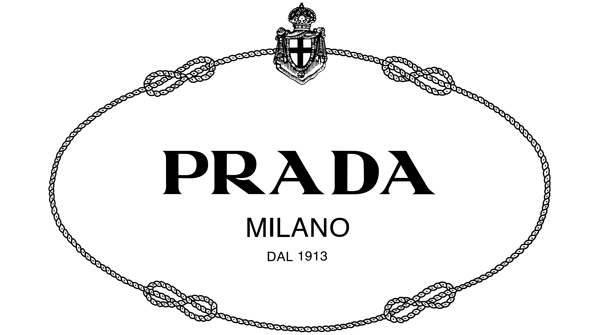

Meus objetivos profissionais:
Meus objetivos profissionais é trabalhar com sites relacionados a moda, sempre tive uma certa obsessão em desfiles e comentar com a minha amiga sobre as novas coleções de cada marca e fazer um ranking das melhores para as piores. Tambem gosto bastante de sites jornalisticos, sempre gostei da possibilidade de você ter acesso a tantas noticias sem sair da sua casa. Minha empresa dos sonhos em relação a moda é com certeza a prada, tanto pela historia da marca e pela propria estetica que continua a mesma apesar dos anos, em relação ao jornalismo acho que seria a “folha de são paulo” por seu papel de sempre dar destaques aos problemas da sociedade.
